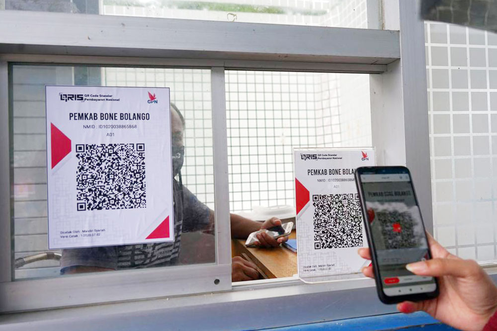

Mengoptimalkan Bisnis dengan API QRIS BCA dan Aplikasi QRIS Lainnya

Sumber : qris.com
API QRIS BCA
API (Application Programming Interface) QRIS BCA adalah solusi teknologi yang disediakan oleh Bank Central Asia (BCA) untuk memungkinkan integrasi pembayaran QRIS ke dalam aplikasi atau sistem bisnis. Dengan menggunakan API QRIS BCA, merchant dapat memanfaatkan berbagai fitur pembayaran digital secara lebih fleksibel dan efisien.
Manfaat API QRIS BCA:
- Integrasi Mudah: API QRIS BCA memungkinkan pengembang untuk mengintegrasikan fitur pembayaran QRIS ke dalam aplikasi atau sistem dengan mudah.
- Transaksi Real-Time: Memungkinkan pemrosesan transaksi secara real-time, meningkatkan efisiensi operasional.
- Keamanan Tinggi: API ini dilengkapi dengan fitur keamanan yang canggih untuk melindungi data dan transaksi.
- Dukungan Pelanggan: BCA menyediakan dukungan teknis untuk membantu pengembang dalam proses integrasi dan penggunaan API.

Sumber : komtekdigital.com
Kursus Microsoft Office Bersertifikat di LPK Komtek Digital
Menguasai Microsoft Office adalah keterampilan penting yang dibutuhkan di hampir setiap industri. LPK Komtek Digital menawarkan kursus Microsoft Office yang dirancang untuk membantu peserta menguasai aplikasi seperti Word, Excel, dan PowerPoint. Kursus ini disertai dengan sertifikat yang diakui secara resmi, yang dapat meningkatkan kredibilitas peserta di dunia kerja.
Manfaat Mengikuti Kursus Microsoft Office di LPK Komtek Digital:
- Materi Lengkap: Kursus mencakup semua fitur penting dari Microsoft Office, mulai dari dasar hingga tingkat lanjut.
- Instruktur Berpengalaman: Peserta akan belajar dari instruktur yang memiliki pengalaman luas dalam penggunaan Microsoft Office.
- Fleksibilitas: Kursus tersedia dalam format online, memungkinkan peserta belajar kapan saja dan di mana saja.
- Sertifikasi: Setelah menyelesaikan kursus, peserta akan mendapatkan sertifikat yang dapat digunakan untuk memperkuat CV mereka.

Sumberc : aspi-indonesia.or.id
Aplikasi ASPI QRIS
ASPI (Asosiasi Sistem Pembayaran Indonesia) menyediakan aplikasi QRIS yang dirancang untuk memudahkan transaksi digital di Indonesia. Aplikasi ASPI QRIS mendukung berbagai metode pembayaran dan memungkinkan merchant untuk menerima pembayaran dengan satu QR Code.
Fitur Utama Aplikasi ASPI QRIS:
- Kemudahan Penggunaan: Antarmuka yang user-friendly memudahkan merchant dalam menerima pembayaran.
- Keamanan: Dilengkapi dengan fitur keamanan untuk melindungi data dan transaksi.
- Kompatibilitas Luas: Mendukung berbagai dompet digital dan bank, sehingga pelanggan memiliki banyak opsi pembayaran.
Aplikasi Berlogo QRIS
Aplikasi berlogo QRIS adalah aplikasi pembayaran yang mendukung standar QRIS, memungkinkan pengguna untuk melakukan transaksi di merchant yang menerima QRIS. Aplikasi ini biasanya disertai dengan logo QRIS untuk menandakan kompatibilitasnya dengan sistem QRIS.
Beberapa Contoh Aplikasi Berlogo QRIS:
- OVO
- GoPay
- DANA
- LinkAja
- ShopeePay

Sumber : flip.id
Aplikasi BNI QRIS
Bank Negara Indonesia (BNI) juga menyediakan aplikasi QRIS yang memungkinkan merchant untuk menerima pembayaran digital dengan mudah. Aplikasi BNI QRIS dirancang untuk memfasilitasi transaksi yang cepat dan aman.
Fitur Utama Aplikasi BNI QRIS:
- Transaksi Mudah dan Cepat: Memudahkan merchant dalam menerima pembayaran dengan cepat.
- Keamanan Tinggi: Dilengkapi dengan sistem keamanan untuk melindungi data transaksi.
- Dukungan Pelanggan: BNI menyediakan layanan pelanggan yang siap membantu merchant dalam penggunaan aplikasi.
Aplikasi untuk Membuat QRIS
Untuk membuat QRIS, merchant dapat menggunakan berbagai aplikasi yang mendukung pembuatan QR Code QRIS. Aplikasi ini biasanya disediakan oleh bank atau penyedia layanan pembayaran digital.
Langkah-langkah Membuat QRIS dengan Aplikasi:
- Unduh Aplikasi: Unduh aplikasi dari penyedia layanan yang Anda pilih, seperti aplikasi dari bank atau dompet digital.
- Registrasi Akun: Daftar dan buat akun dengan mengisi informasi yang diperlukan.
- Verifikasi Identitas: Unggah dokumen yang diperlukan seperti KTP dan NPWP untuk verifikasi.
- Buat QR Code: Setelah verifikasi selesai, Anda dapat membuat QR Code QRIS yang siap digunakan untuk menerima pembayaran.
Kesimpulan
Menggunakan API QRIS BCA dan aplikasi QRIS lainnya memberikan banyak keuntungan bagi merchant dalam mengelola transaksi digital. Dengan integrasi yang mudah, keamanan tinggi, dan dukungan pelanggan, solusi ini memudahkan proses pembayaran dan meningkatkan efisiensi operasional. Selain itu, mengikuti kursus Microsoft Office bersertifikat di LPK Komtek Digital dapat membantu individu meningkatkan keterampilan mereka, yang sangat penting di era digital ini. Dengan memanfaatkan teknologi pembayaran digital dan meningkatkan keterampilan, kita dapat menghadapi tantangan bisnis modern dengan lebih baik.